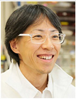

Philosophyやまびこの理念
- 自らを高められる社員を支援し、評価します。
- 当院は魅力的なクリニックであり続けます。職員、家族も含め、関わる人を幸せにします。
- 信頼と安心を築き、関わる人すべてに笑顔を与えます。
- 既成にとらわれず、新しいかたちを求め続けます。
Message代表ご挨拶

新横浜整形外科リウマチ科 院長
三笠 貴彦
当院は2010年の開設以来、地域に貢献することを使命とし、地域の皆様に愛されるクリニックを目指して参りました。
整形外科・リウマチ科を主体として開設し、現在では一般内科・循環器内科・脳神経外科・リハビリテーション科といった診療科目に加え、健康診断や予防接種の自費診療や、スポーツトレーナーとしての外部派遣・帯同、通所リハビリテーションの介護部門と提供内容は多岐にわたり、患者様のさまざまなニーズに対応できるようサービスの充実を図っています。
医療法人として「前進」していきながら地域住民の皆様の健康に還元できればと思います。
Job seeker profile沿革
-
- 2010年4月1日
- 新横浜千歳観光ビル4階に「新横浜整形外科リウマチ科」開設
-
- 2012年10月1日
- 「新横浜整形外科リウマチ科デイサービス」開設
-
- 2015年11月11日
- 医療法人化として「医療法人社団 やまびこ」スタート
-
- 2018年8月
- 「たまプラーザ整形外科リウマチ科」開設
-
- 2021年1月
- 「自由が丘整形外科リウマチ科」開設
-
- 2021年4月
- 「向ヶ丘遊園整形外科リウマチ科」開設
-
- 2022年4月
- 「やまびこ放課後等デイサービス(藤沢駅前、茅ケ崎)」開始
-
- 2022年6月
- 「東戸塚内科健診クリニック」開設
-
- 2022年6月
- 「青葉台整形外科リウマチ科」開設
-
- 2022年7月
- 「ふちのべ整形外科リウマチ科」開設
-
- 2023年7月
- 「成城整形外科リウマチ科」開設
-
- 2023年7月
- 「平塚整形外科リウマチ科」開設
-
- 2024年4月
- 「玉川学園前整形外科リウマチ科」開設
-
- 2025年3月
- 「東戸塚整形外科リウマチ科」開設
Job seeker profile施設一覧マップ
About医療への取り組み
やまびこグループでは、整形外科を中心に地域に根ざした医療を提供しています。
骨・関節・筋肉・神経などの運動器疾患を対象に、診察・検査・リハビリテーションを通して
患者様一人ひとりの症状や生活背景に寄り添った医療を大切にしています。
特にリハビリテーション医療に力を入れ、保存療法を中心とした「切らずに治す医療」を理念に、
地域の皆さまが安心して日常生活を送れるようサポートしています。
なお、クリニックによって対応できる診療内容が異なる場合があり、
必要に応じて専門医療機関への紹介も行っています。

Job seeker profile会社概要
| 名称 | 医療法人社団 やまびこ |
|---|---|
| 設立 | 2010年4月1日 |
| 理事長 | 三笠 貴彦 |
| 所在地 |
〒222-0033 横浜市港北区新横浜3-6-4 新横浜千歳観光ビル3階 |
| 連絡先 | 045-548-3887 |